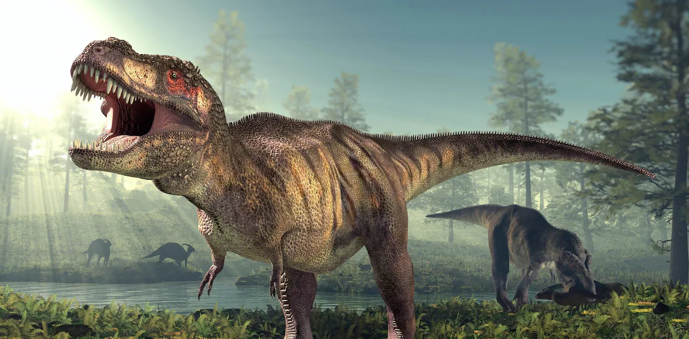
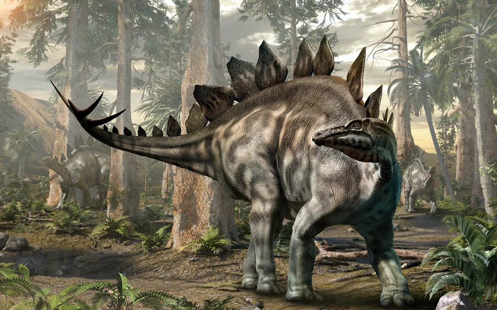
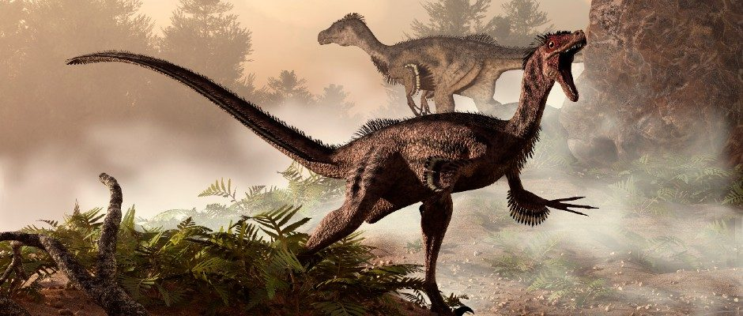
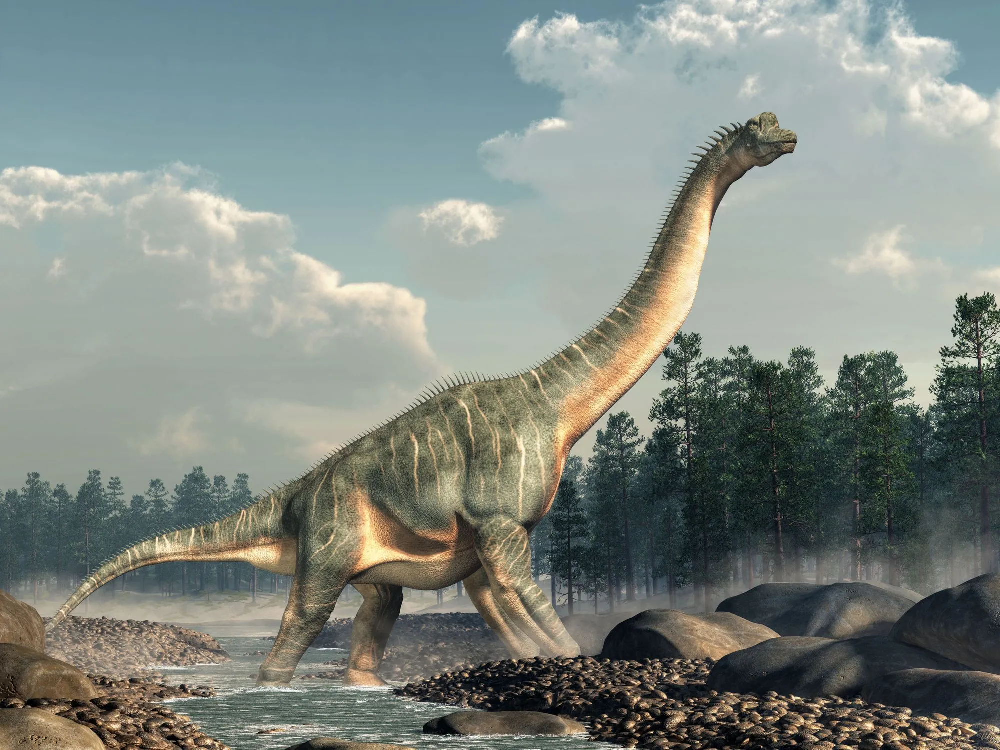
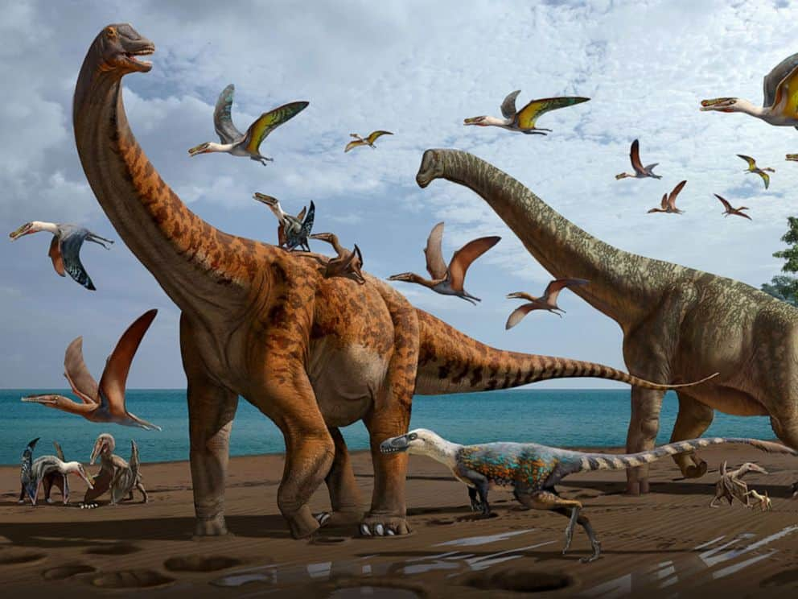
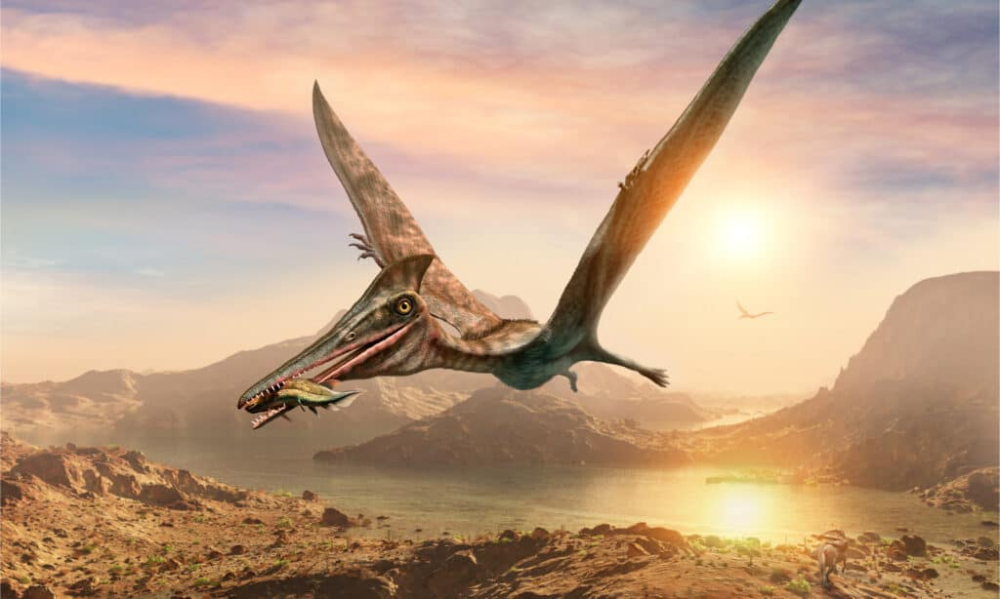

<!DOCTYPE html>
<html lang="en">
<head>
    <meta charset="UTF-8">
    <meta http-equiv="X-UA-Compatible" content="IE=edge">
    <meta name="viewport" content="width=device-width, initial-scale=1.0">
    <title>Document</title>
</head>
<body>
    
</body>
</html>


<!DOCTYPE html>
<html lang="en">
<head>
    <meta charset="UTF-8">
    <meta http-equiv="X-UA-Compatible" content="IE=edge">
    <meta name="viewport" content="width=device-width, initial-scale=1.0">
    <title>Dinozauri</title>

    <link href="https://cdn.jsdelivr.net/npm/bootstrap@5.1.3/dist/css/bootstrap.min.css" rel="stylesheet" integrity="sha384-1BmE4kWBq78iYhFldvKuhfTAU6auU8tT94WrHftjDbrCEXSU1oBoqyl2QvZ6jIW3" crossorigin="anonymous">
    <link rel="stylesheet" href="styles.css">
    <script src="script.js"></script>
</head>

<body>
   
    <header>
        <nav class="navbar navbar-expand-lg navbar-light bg-light">
            <a class="navbar-brand" href="#">Dinozauri</a>
            <button class="navbar-toggler" type="button" data-toggle="collapse" data-target="#navbarNav" aria-controls="navbarNav" aria-expanded="false" aria-label="Toggle navigation">
                <span class="navbar-toggler-icon"></span>
            </button>
            <div class="collapse navbar-collapse" id="navbarNav">
                <ul class="navbar-nav">
                    <li class="nav-item">
                        <a class="nav-link" href="index.html">Despre</a>
                    </li>
                    <li class="nav-item">
                        <a class="nav-link" href="dinozauri.html">Dinozauri</a>
                    </li>
                    <li class="nav-item">
                        <a class="nav-link" href="contact.html">Contact</a>
                    </li>
                </ul>
            </div>
        </nav>
    </header>
<main>
    <div class="container my-5">
        <h1 class="section-title text-center">Dinozauri</h1>
        <div class="row">
            <div class="col-sm-4">
                <div class="card">
                    
                    <div class="card-body">
                        <h5 class="card-title">T-Rex</h5>
                        <p class="card-text">Tyrannosaurus rex sau T-Rex este unul dintre cei mai cunoscuți dinozauri. Era un predator foarte puternic și putea atinge o lungime de aproximativ 12 metri și o înălțime de aproximativ 4 metri. Avea dinți mari și ascuțiți și o putere de mușcare de aproximativ 12 tone. Era un dinozaur biped, însemnând că mergea pe două picioare.</p>
                        <a href="dino-details/trex-details.html" class="btn btn-primary">Ma multe</a>
                    </div>
                </div>
            </div>
            <div class="col-sm-4">
                <div class="card">
                    
                    <div class="card-body">
                        <h5 class="card-title">Stegosaurus</h5>
                        <p class="card-text">Stegosaurus era un dinozaur erbivor cu solzi pe spate și o coadă lungă. Avea o lungime de aproximatimativ 9 metri și o înălțime de aproximativ 4 metri. Solzii sale erau probabil utilizate pentru a-și menține temperatura corporală sau ca apărare împotriva prădătorilor. Era un dinozaur quadriped, însemnând că mergea pe patru picioare.</p>
                        <a href="dino-details/stego-details.html" class="btn btn-primary">Mai multe</a>
                    </div>
                </div>
            </div>
            <div class="col-sm-4">
                <div class="card">
                    
                    <div class="card-body">
                        <h5 class="card-title">Velociraptor</h5>
                        <p class="card-text">Velociraptor era un dinozaur carnivor mic, cu o lungime de aproximativ 1,8 metri și o înălțime de aproximativ 1 metru. Era un dinozaur biped și avea gheare ascuțite la picioarele din față, care erau utilizate pentru a prinde și utiliza ca arme împotriva prăzii. Era un vânător agil și rapid, cu o viteză estimată de aproximativ 64 km/h. Se crede că era un dinozaur social, trăind în grupuri mari și comunicând prin sunete complexe.</p>
                        <a href="dino-details/velo-details.html" class="btn btn-primary">Mai multe</a>
                    </div>
                </div>
            </div>
            <div class="col-sm-4">
                <div class="card">
                    
                    <div class="card-body">
                        <h5 class="card-title">Brachiosaurus</h5>
                        <p class="card-text">Brachiosaurus era un dinozaur erbivor foarte mare, cu o lungime de aproximativ 22 metri și o înălțime de aproximativ 13 metri. Era un dinozaur quadriped și avea o gât lung și un cap mic, care i-a permis să mănânce frunze de pe copaci înalți. Se crede că avea un ritm de creștere lent și că a trăit până la vârsta de 50 de ani.</p>
                        <a href="dino-details/brachi-details.html" class="btn btn-primary">Mai multe</a>
                    </div>
                </div>
            </div>
            <div class="col-sm-4">
                <div class="card">
                    
                    <div class="card-body">
                        <h5 class="card-title">Diplodocus</h5>
                        <p class="card-text">Diplodocus era un dinozaur erbivor foarte mare, cu o lungime de aproximativ 27 metri și o înălțime de aproximativ 4 metri. Avea o coadă lungă și subțire, care era probabil utilizată ca armă sau ca echilibru. Se crede că avea un ritm de creștere rapid și că a trăit până la vârsta de 30 de ani. Deși era un dinozaur erbivor, Diplodocus avea o dentiție specializată pentru a mesteca frunze dure. Se crede că se hrănea cu frunze de pe copaci înalți și că se înmulțea prin ouă. </p>
                        <a href="dino-details/diplo-details.html" class="btn btn-primary">Mai multe</a>                    
                    </div>
                </div>
            </div>                                 
            <div class="col-sm-4">
                <div class="card">
                    
                    <div class="card-body">
                        <h5 class="card-title">Pterodactyl</h5>
                        <p class="card-text">Pterodactyl era un dinozaur zburător, cu aripi mari și lungi și un cap mic. Era un dinozaur carnivor, care se hrănea cu pește și alte animale marine. Se crede că avea o capacitate mare de zbor, cu o viteză estimată de aproximativ 150 km/h. Era un dinozaur răpitor, care ataca prada prin picaj.</p>
                        <a href="dino-details/ptera-details.html" class="btn btn-primary">Mai multe</a>  
                    </div>
                </div>
            </div>
        </div>
    </div>
</section>
</main>
<footer>
    <div class="container">
        <p>Proiect pentru dezvoltarea aplicatiilor web </p>
        <p>Student: Oprea Catalin Eduard </p>
    </div>
</footer>
<script src="https://cdn.jsdelivr.net/npm/jquery@3.6.0/dist/jquery.min.js"></script>
<script src="https://cdn.jsdelivr.net/npm/bootstrap@5.1.3/dist/js/bootstrap.bundle.min.js" integrity="sha384-ka7Sk0Gln4gmtz2MlQnikT1wXgYsOg+OMhuP+IlRH9sENBO0LRn5q+8nbTov4+1p" crossorigin="anonymous"></script>
<script src="script.js"></script>
</body>
</html>